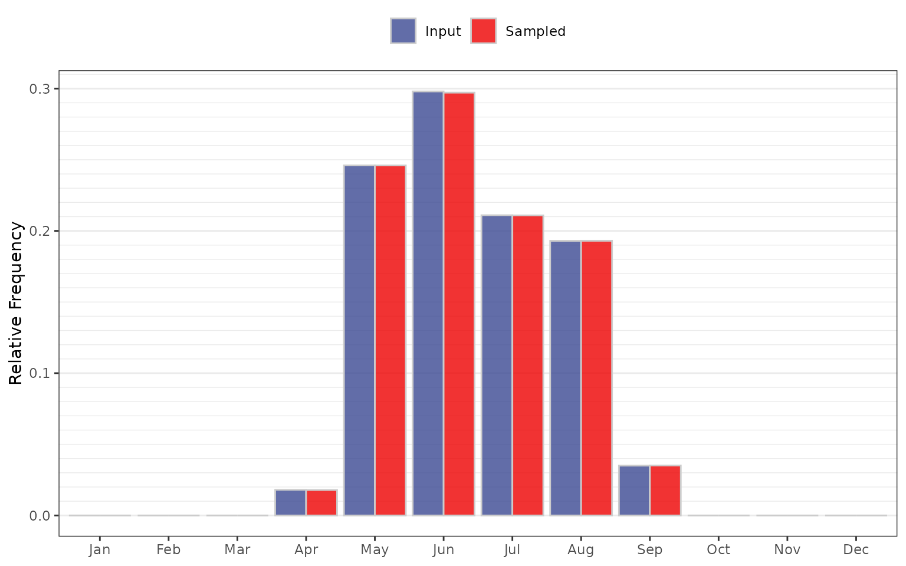
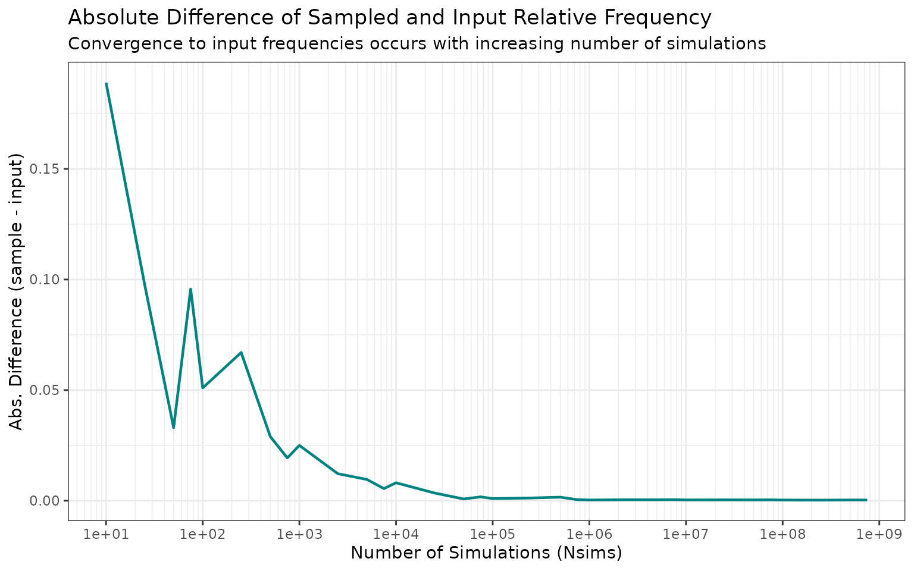

Seasonality Sampling Validation
Source:vignettes/validation-seasonality_sampling.Rmd
validation-seasonality_sampling.RmdPurpose
Verify that the seasonality sampling processes/module reproduces the input relative frequencies (within Monte Carlo variability).
The seasonality module creates a sequence of calendar months that is
Nsims in length. The sampling probability is based on the
historical relative frequency of flood events. This test validates the
application of sample() within rfa_similate()
produces a sampled distribution consistent with the input.
Input Data
The input seasonality distribution is stored in
jmd_seasonality$relative_frequency, a vector of 12 monthly
probabilities that sum to 1.
seasonality_prob <- jmd_seasonality$relative_frequency
input_df <- data.frame(Month = month.abb,
Relative_Frequency = seasonality_prob)| Month | Frequency | Relative Frequency | Cumulative Rel. Frequency |
|---|---|---|---|
| January | 0 | 0.000 | 0.000 |
| February | 0 | 0.000 | 0.000 |
| March | 0 | 0.000 | 0.000 |
| April | 1 | 0.018 | 0.018 |
| May | 14 | 0.246 | 0.263 |
| June | 17 | 0.298 | 0.561 |
| July | 12 | 0.211 | 0.772 |
| August | 11 | 0.193 | 0.965 |
| September | 2 | 0.035 | 1.000 |
| October | 0 | 0.000 | 1.000 |
| November | 0 | 0.000 | 1.000 |
| December | 0 | 0.000 | 1.000 |
Test
Sample 1,000,000 months using the input probabilities, then compare the sampled relative frequencies to the input.
set.seed(42)
Nsims <- 1000000
InitMonths <- sample(1:12, size = Nsims, replace = TRUE, prob = seasonality_prob)
sample_freq <- tabulate(InitMonths, nbins = 12) / Nsims| Month | Input Frequency | Sampled Frequency | Difference | Percent Difference |
|---|---|---|---|---|
| Jan | 0.000 | 0.0000 | 0e+00 | NaN |
| Feb | 0.000 | 0.0000 | 0e+00 | NaN |
| Mar | 0.000 | 0.0000 | 0e+00 | NaN |
| Apr | 0.018 | 0.0179 | -1e-04 | -0.7333 |
| May | 0.246 | 0.2460 | 0e+00 | -0.0073 |
| Jun | 0.298 | 0.2971 | -9e-04 | -0.2866 |
| Jul | 0.211 | 0.2109 | -1e-04 | -0.0479 |
| Aug | 0.193 | 0.1930 | 0e+00 | 0.0197 |
| Sep | 0.035 | 0.0351 | 1e-04 | 0.1914 |
| Oct | 0.000 | 0.0000 | 0e+00 | NaN |
| Nov | 0.000 | 0.0000 | 0e+00 | NaN |
| Dec | 0.000 | 0.0000 | 0e+00 | NaN |

